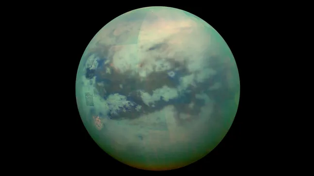
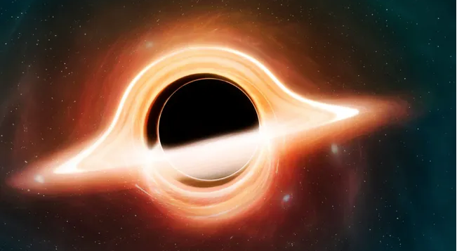
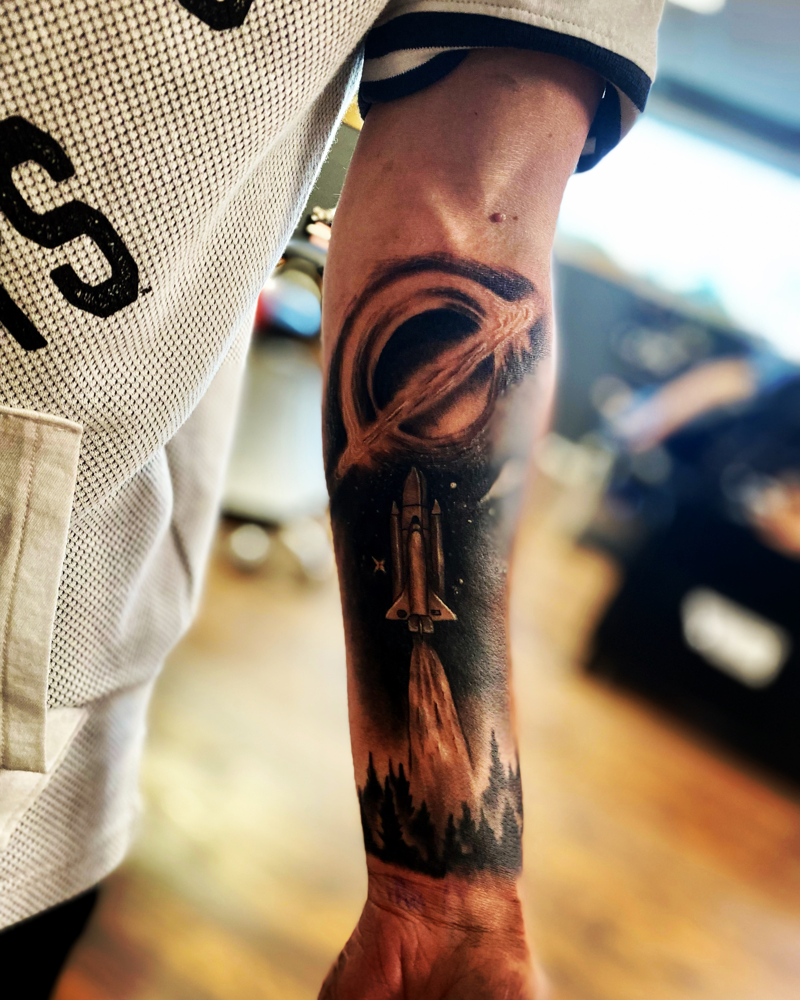
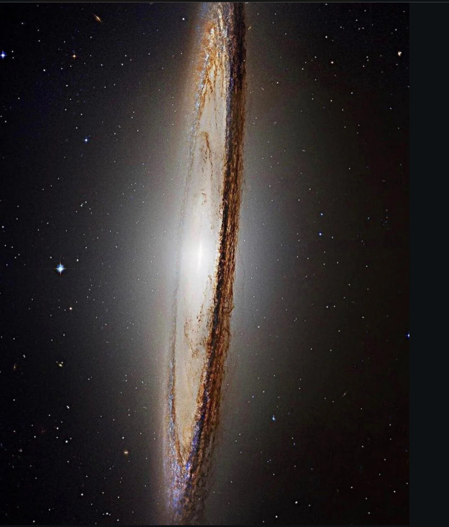
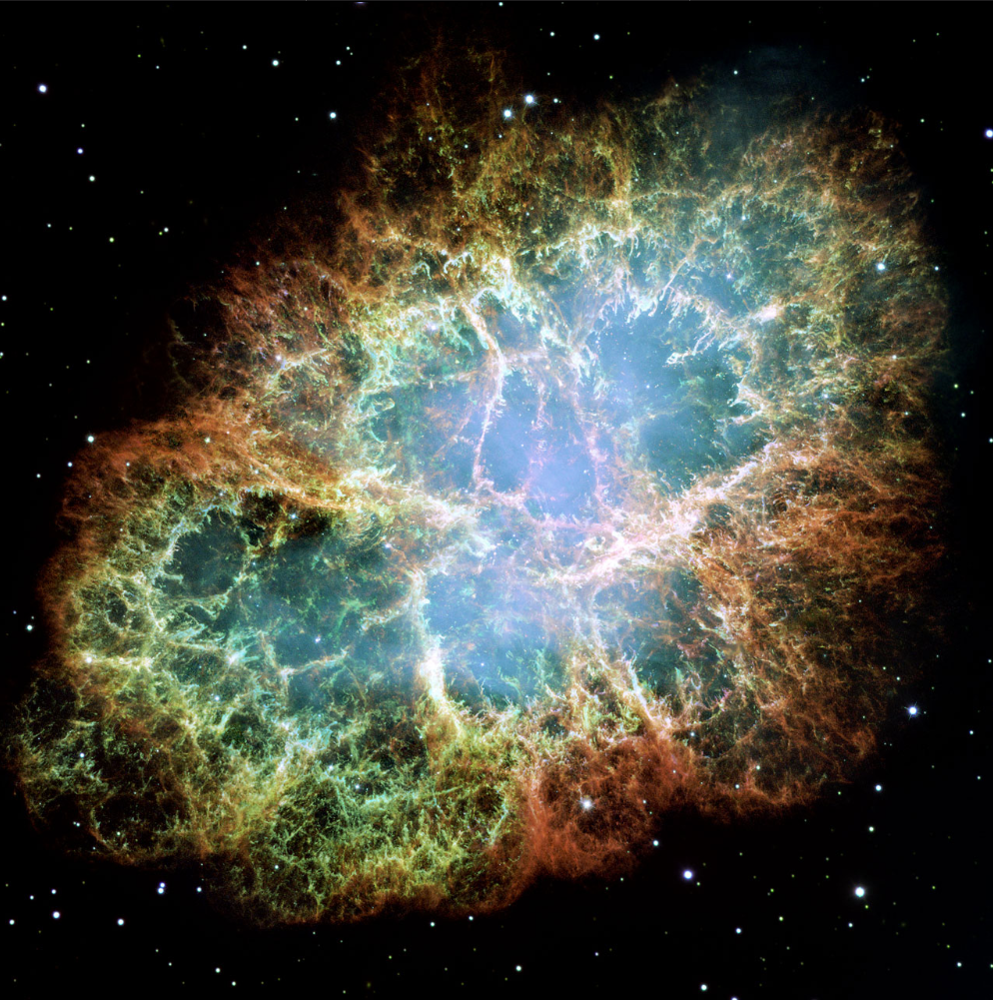
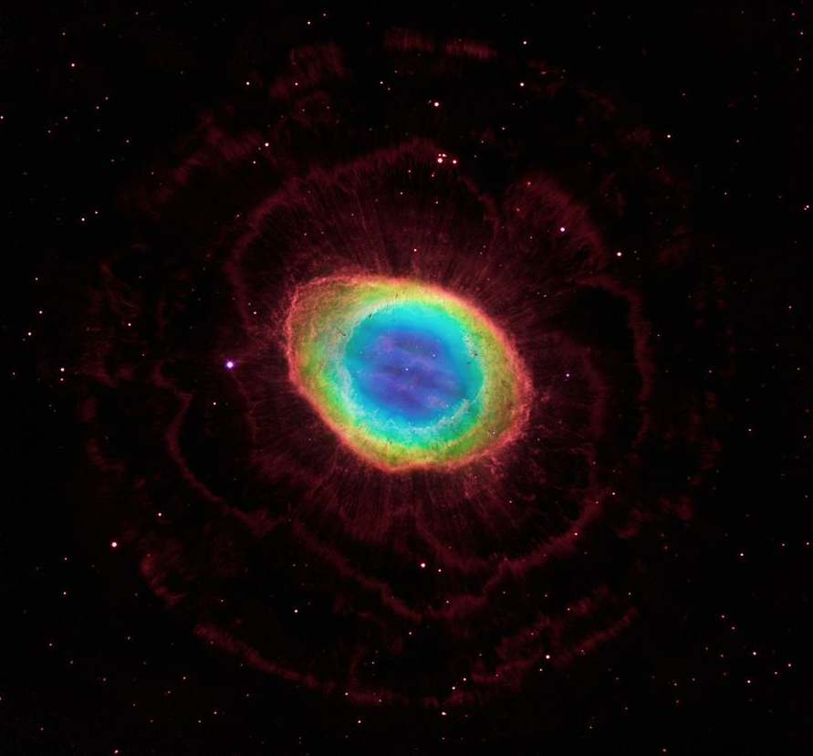

My Collection
Ever since I was a kid, I've always loved space. I remember having these cool space magazines mailed every month ( yes that may show my age a bit, lol.), and I couldn't wait to read them. I've gathered a few images of my favorite space-related items, and I wanted to share them with you. I hope you enjoy them as much as I do!

Titan Moon
Celestial Body | Saturn's Largest Moon
Titan is the largest moon of Saturn and the second-largest moon in the Solar System. It's the only moon known to have a dense atmosphere and is unique for its methane lakes and rivers.

Black Hole
Celestial Body | Stellar Remnant
A black hole is a region of spacetime where gravity is so strong that nothing—no particles or even electromagnetic radiation such as light—can escape from it. Black holes are predicted by Einstein's theory of general relativity and have been observed through their gravitational effects.

My Black Hole Tattoo
Art | Tattoo
The black hole in my tattoo was inspired by my favorite movie, Interstellar. I got it because I love space and the mysteries of the universe. It serves as a reminder of how vast and unknown our universe is, and how much there is still to explore.

Sombrero Galaxy
Celestial Body | Spiral Galaxy
The Sombrero Galaxy is a face-on spiral galaxy in the constellation Virgo, and one of my personal favorites. It is known for its prominent dust lane and is one of the most studied galaxies in the universe.

Crab Nebula
Celestial Body | Supernova Remnant
The Crab Nebula is a pulsar wind nebula and the remnant of a supernova explosion observed by Chinese astronomers in 1054 AD. It is one of the most studied objects in the universe and contains a rapidly rotating neutron star at its center.

Ring Nebula
Celestial Body | Planetary Nebula
This is a special one to me. It was one of the first nebulae I saw through one of the telescopes at Texas Tech's observatory. I was amazed at how beautiful it was. The Ring Nebula is a planetary nebula in the constellation Lyra. It is one of the most famous and well-studied nebulae in the universe.